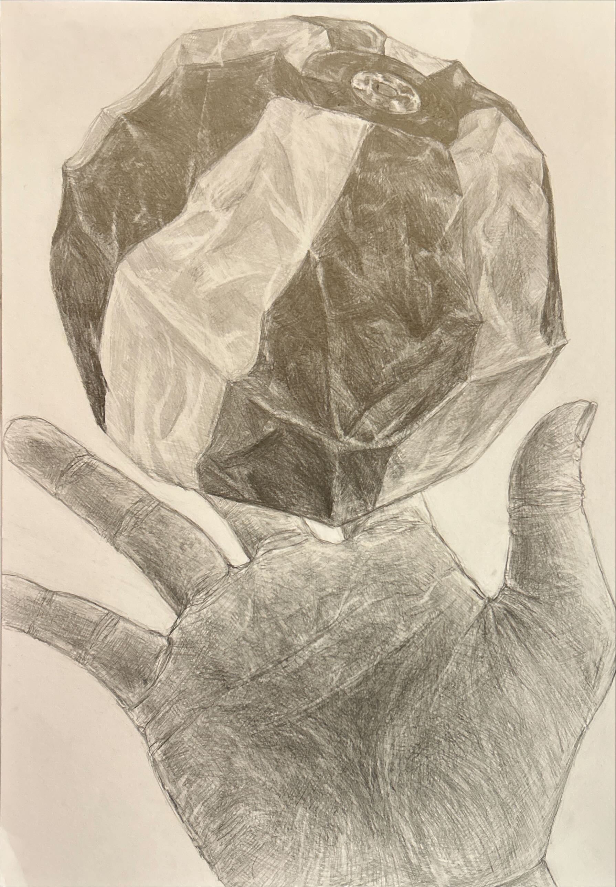
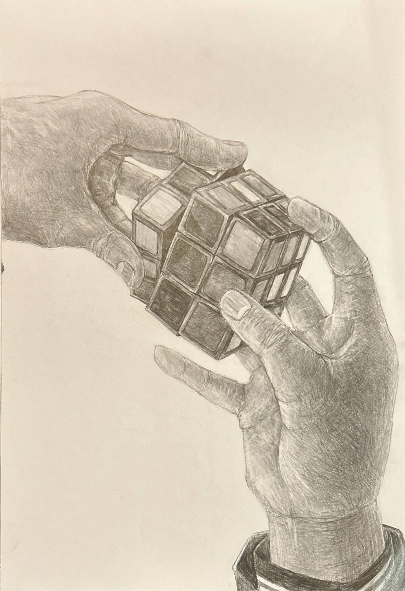
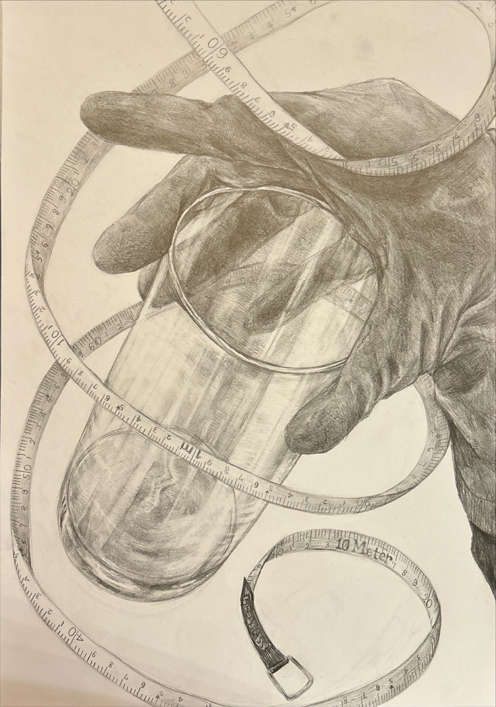
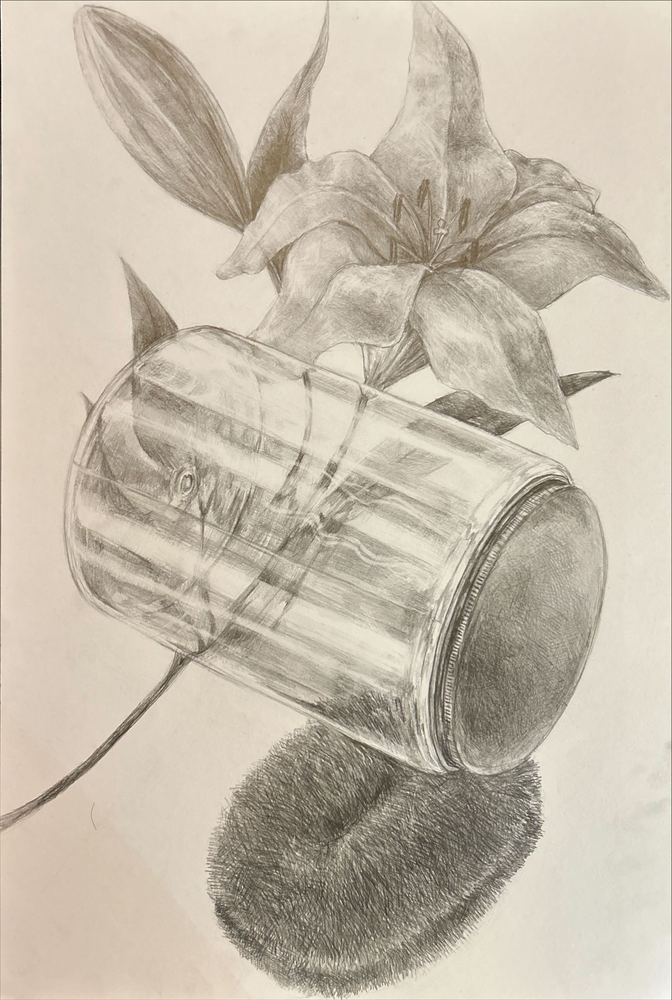
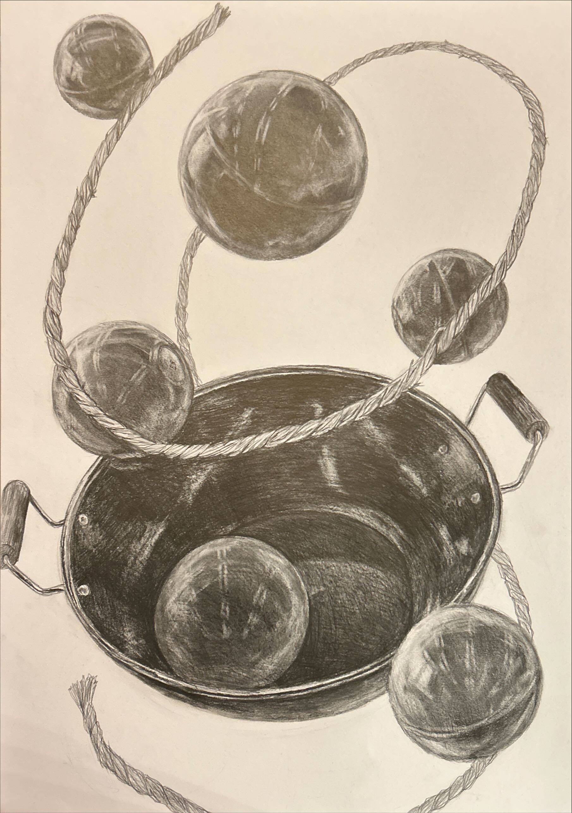
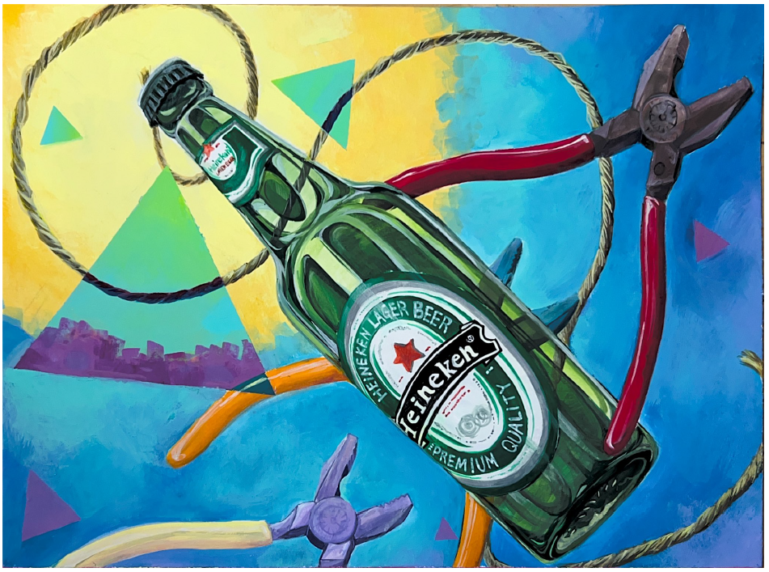

基礎デッサン・色彩構成
ここでは私が描いた基礎デッサン・色彩構成をまとめ、公開しています。
紙風船と手

手とOOのデッサン 制作時間：６時間 モチーフ：手, 紙風船
手とルービックキューブ

手とOOのデッサン 制作時間：６時間 モチーフ：手, ルービックキューブ
コップとメジャー，ゴム手袋

構成デッサン 制作時間：６時間 モチーフ：コップ，メジャー，ゴム手袋
百合,瓶,たわし

構成デッサン 制作時間：６時間 モチーフ：百合,瓶,たわし
中華鍋とゴムボール,麻縄

構成デッサン 制作時間：６時間 モチーフ：中華鍋,ゴムボール,麻縄
色彩構成

構成デッサン 制作時間：６時間 モチーフ：ビール瓶,麻縄,ペンチ